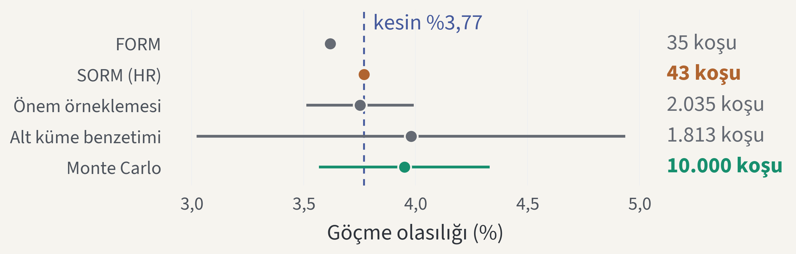
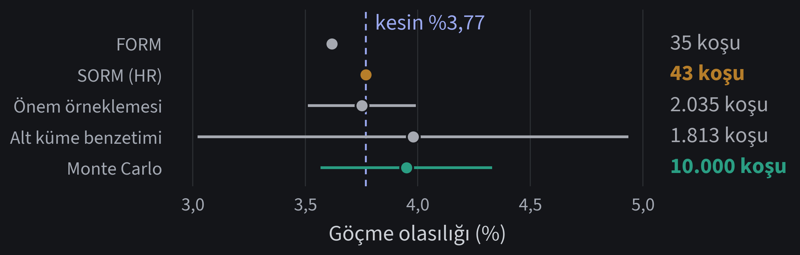
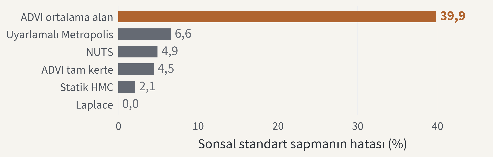
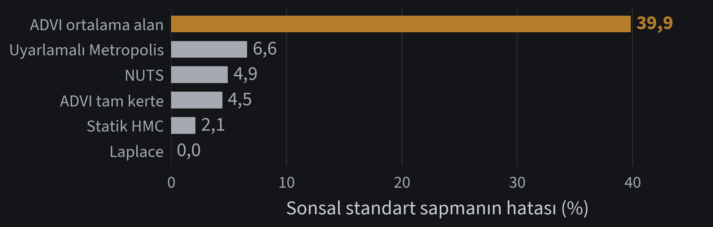
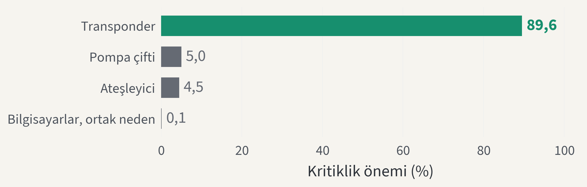
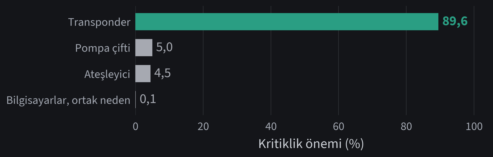
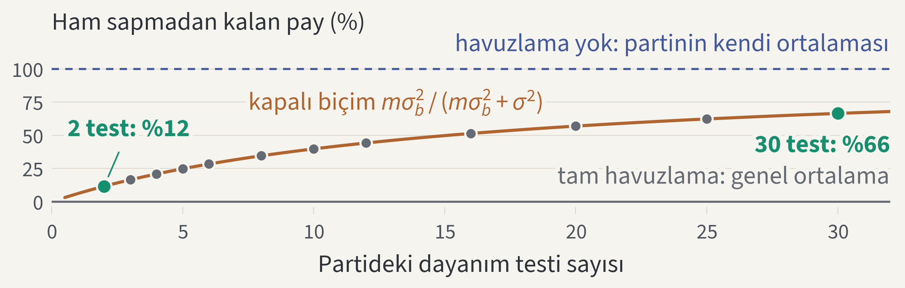
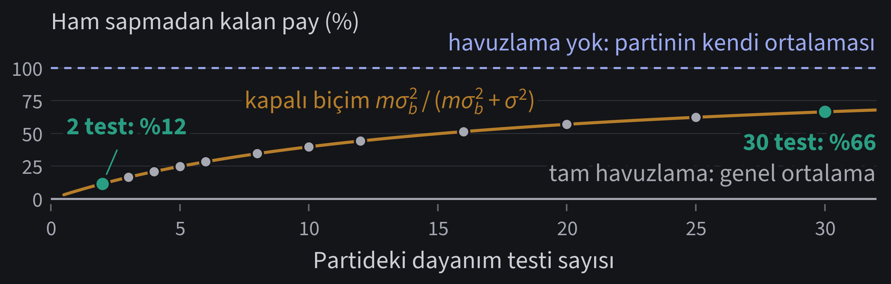
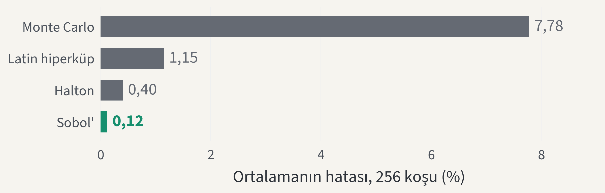
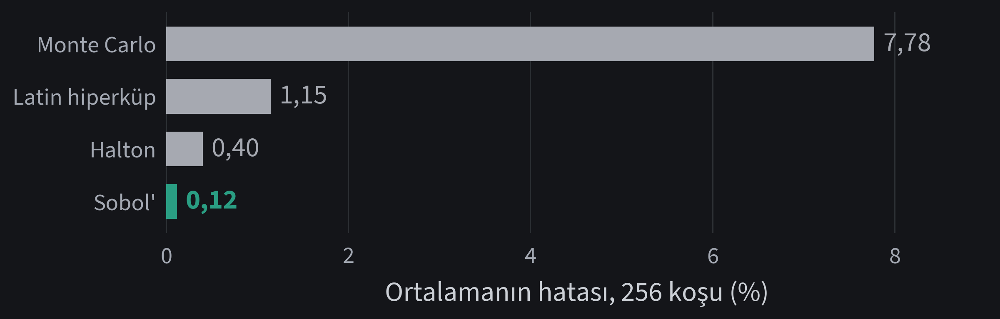

Stats-Lab · probstat 0.21.0
Tek olasılık modeli her belirsizlik sorusunu yanıtlıyor
Girdileri ve benzetimi bir kez tanımlayın; ileri, ters, risk ve sistem soruları aynı nesneyi ve aynı tohumu paylaşsın.
Stats-Lab projesiprobstat · BSD-3-Clause lisansısürüm 0.21.0
Neden önemli
Tek bir benzetim 8 farklı belirsizlik sorusu doğuruyor
8
soru, çıktının dağılımından göçmenin maliyetine kadar; her birini kendi yöntemi yanıtlıyor: örnekleme, Sobol indisleri, FORM, MCMC, vekil modeller.
Tek model nesnesi her soruyu tek tohumdan yanıtlayabilir mi?
Yöntem
Dört tanım bir benzetimi bir çalışmaya dönüştürüyor
- GirdilerJointInput marjinalleri, birimlerini ve kopulalarını adlandırıyor.
- ModelProbabilisticModel benzetimi ilgilenilen niceliklere bağlıyor.
- ÇalışmaUQStudy(model, seed=2026) her aşamaya kendi alt akışını veriyor.
- AşamalarHer çağrı model koşularını, tohumunu ve figürünü tek rapora yazıyor.
Sonuçlar
Tek tohumlu çalışma dört soruyu 42.048 model koşusunda yanıtladı
| Soru | Yanıt | Model koşusu |
|---|---|---|
| Güvenlik payı nasıl dağılıyor? | %5 yüzdelik: 0,124 kN | 4.096 |
| Hangi girdi belirliyor? | load: toplam Sobol indisi 0,71 | 4.096 |
| Göçme ne kadar olası? | SORM %3,77 · kesin %3,77 | 13.856 |
| Risk altındaki kayıp ne? | CVaR %99: 49,8 kayıp birimi | 20.000 |
| Toplam maliyet | tek rapor, tek tohum ağacı | 42.048 |
Kanıt · güvenilirlik
SORM kesin göçme olasılığını 43 model koşusunda yakalıyor


Kesin %3,77, karelemeyle · Monte Carlo %3,95, %95 aralık %3,57–%4,33, 10.000 koşu
Bir sayı
×233
Monte Carlo'dan daha az model koşusu, daha küçük hatayla
10.000 Monte Carlo ÷ 43 SORM koşusu
Kanıt · kalibrasyon
MCMC sonsal yayılımı %7 içinde buluyor; ortalama alan ADVI %40 ıskalıyor


Kesin eşlenik sonsalı olan doğrusal-Gauss kalibrasyonu · 2 tohumun ortancası
Kanıt · sistem mühendisliği
İniş aracının görev kayıplarının %90'ına transponder yol açıyor


720 sa boyunca kesin güvenilirlik: 0,923, ikili karar diyagramından · 8 en küçük kesme kümesi · örnekleme yok
Uygulamalı istatistik
Girdi dağılımları veriden geliyor, veri de 9 soru daha doğuruyor
9
veri sorusu, grup farklarından sansürlü örneklemlere; karma, dayanıklı, kantil, sayım, düzgünleştirme, çok değişkenli ve zaman serisi modelleri yanıtlıyor.
Kanıt · karma modeller, benzetim partileri
Ham sapmadan kalan pay 2 testlik partide %12, 30 testlikte %66 oluyor


REML: partiler arası σb 0,11 kN, parti içi σ 0,43 kN · 12 parti, 141 test, tohumlu
Doğrulama
Bir formülle bir sürüm arasında beş denetim duruyor
- Atıf650+ kaynak; her işlevin belge dizesi kaynak anahtarını adlandırıyor.
- Kayıt1.100+ denklem; her birinin simgeleri, kaynağı ve kod konumu kayıtlı.
- Sınama2.400+ sınama: kapalı biçimler, sayım ve Monte Carlo hata sınırları.
- Figür denetimiTemalı her figür yazısını 9 pt ve üstünde, tuvalin içinde tutuyor.
- BütünleştirmeRuff, katı mypy, tüm sınamalar ve her laboratuvar Python 3.11–3.13 üzerinde koşuyor.
Kanıt · kıyaslamalar
Sobol' noktaları aynı maliyetle ortalamanın hatasını ×66 küçültüyor


Ishigami işlevi, kestirim başına 256 koşu, 5 tohumun ortancası · hızlı başlangıç çalışması aynı tasarımı kullanıyor
Sınırlamalar
Üç sınır bu sonuçları kısıtlıyor
- FORM ve SORM dört kollu sistem kıyaslamasında çözemiyor.
- Kıyaslamalar: probstat 0.17.0, hızlı kip, 2 ile 5 tohum; kapsama oranları kaba.
- Monte Carlo basamakları tohumla oynuyor; her biri %95 aralığını taşıyor.
Sonuç
Evet: tek model her soruyu tek tohumdan yanıtladı
- SORM kesin %3,77 göçme olasılığını 43 koşuda buldu.
- MCMC kesin sonsalı %7 içinde buldu; ortalama alan ADVI ıskaladı.
- İniş aracının kayıplarının %90'ına transponder yol açıyor.
Kaynaklar
Slaytlardaki her yöntem birincil bir kaynağa dayanıyor
- Hasofer, Lind (1974). Exact and invariant second-moment code format. J. Eng. Mech. Div.
- Breitung (1984). Asymptotic approximations for multinormal integrals. J. Eng. Mech.
- Hohenbichler, Rackwitz (1988). Improvement of second-order reliability estimates. J. Eng. Mech.
- Saltelli et al. (2010). Variance based sensitivity analysis of model output. Comput. Phys. Commun.
- Owen (1995). Randomly permuted (t,m,s)-nets and (t,s)-sequences. Springer.
- Rockafellar, Uryasev (2000). Optimization of conditional value-at-risk. J. Risk.
- Kucukelbir et al. (2017). Automatic differentiation variational inference. JMLR.
- Bryant (1986). Graph-based algorithms for Boolean function manipulation. IEEE Trans. Comput.
- Rausand, Høyland (2004). System reliability theory. Wiley.
- Henderson (1975). Best linear unbiased estimation and prediction under a selection model. Biometrics.
Sorularınızı bekliyoruz
Tek model her soruyu yanıtlıyor: üç komutla başlayın
git clone https://github.com/ayberkdt/Stats-Lab.git python -m pip install -e ".[visualization]" python examples/uq_study_lab.py
github.com/ayberkdt/Stats-LabÖğrenme yolları: docs/learning-path.md
Ek · yedek slayt
Örnekleme yöntemleri yayılımını bildiriyor; analitikler tohum istemiyor
| Yöntem | Göçme olasılığı | Model koşusu | Değişim katsayısı |
|---|---|---|---|
| FORM | %3,62 | 35 | analitik |
| SORM, Breitung | %3,74 | 43 | analitik |
| SORM, Hohenbichler-Rackwitz | %3,77 | 43 | analitik |
| Önem örneklemesi | %3,75 | 2.035 | %3,3 |
| Alt küme benzetimi | %3,98 | 1.813 | %12,3 |
| Monte Carlo | %3,95 | 10.000 | %4,9 |